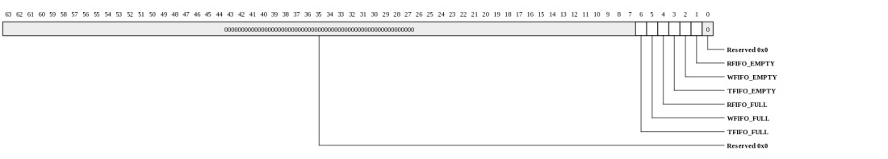
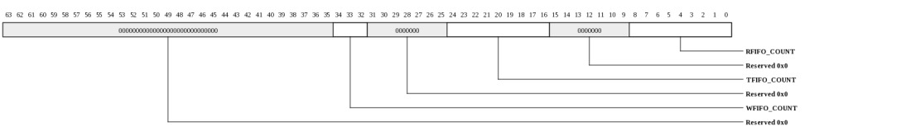
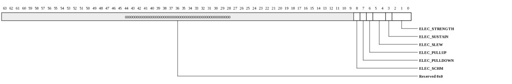
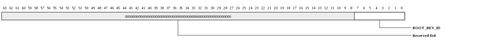
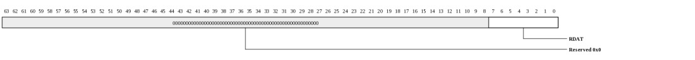
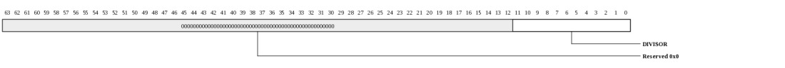
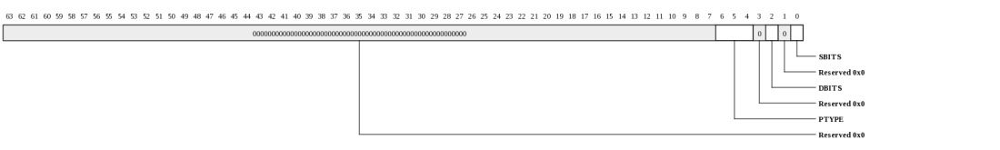
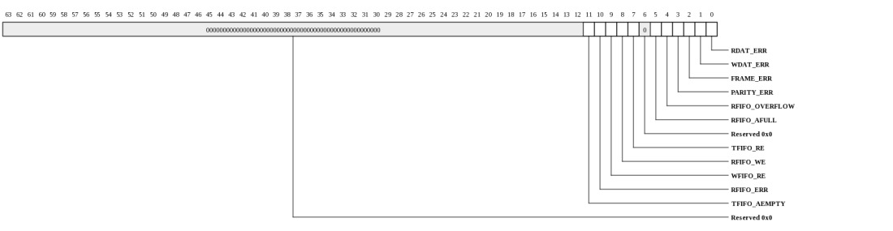

Register Summary
| Address | Register
| 0000 | UART_DEV_INFO | 0008 | UART_DEV_CTL | 0010 | UART_MMIO_INFO | 0018 | UART_MEM_INFO | 0020 | UART_SCRATCHPAD | 0028 | UART_SEMAPHORE0 | 0030 | UART_SEMAPHORE1 | 0038 | UART_CLOCK_COUNT | 0100 | UART_BASELINE_CTL | 0108 | UART_FLAG | 0110 | UART_FIFO_COUNT | 0118 | UART_ELECTRICAL_CONTROL | 0120 | UART_BOOT_REVISION_ID | 0130 | UART_BUFFER_THRESHOLD | 0140 | UART_TRANSMIT_DATA | 0148 | UART_RECEIVE_DATA | 0150 | UART_MODE | 0158 | UART_DIVISOR | 0160 | UART_TYPE | 0200 | UART_INTERRUPT_STATUS | 0208 | UART_INTERRUPT_MASK | |
|---|
Register Definitions
Device Info (UART_DEV_INFO: 0x0000)
This register provides general information about the device attached to this port and channel.
| Bits | Name | Type | Reset | Description
| 35:32 | INSTANCE | RO | HW | Instance ID for multi-instantiated devices. | 27:24 | REGISTER_REV | RO | 0 | Register format architectural revision. | 23:16 | DEVICE_REV | RO | HW | Device revision ID. | 11:0 | TYPE | RO | 028h | Encoded device Type - 40 to indicate UART |
|
|---|
Device Control (UART_DEV_CTL: 0x0008)
This register provides general device control.
| Bits | Name | Type | Reset | Description
| 3 | SDN_ROUTE_ORDER | RW | 0 | When 1, packets sent on the SDN will be routed x-first. When 0, packets will be routed y-first. This setting must match the setting in the Tiles. Devices may have additional interfaces with customized route-order settings used in addition to or instead of this field. | 2 | RDN_ROUTE_ORDER | RW | 1 | When 1, packets sent on the RDN will be routed x-first. When 0, packets will be routed y-first. This setting must match the setting in the Tiles. Devices may have additional interfaces with customized route-order settings used in addition to or instead of this field. | |
|---|
MMIO Info (UART_MMIO_INFO: 0x0010)
This register provides information about how the physical address is interpreted by the IO device. The PA is divided into {CHANNEL,SVC_DOM,IGNORED,REGION,OFFSET}. The values in this register define the size of each of these fields.
| Bits | Name | Type | Reset | Description
| 40:35 | REGION_WIDTH | RO | 0 | Size of the REGION field for this channel. The LSBs of the physical address are interpreted as {REGION,OFFSET} | 34:29 | OFFSET_WIDTH | RO | 16 | Size of the OFFSET field for this channel. The LSBs of the physical address are interpreted as {REGION,OFFSET} | 28:22 | NUM_SVC_DOM | RO | 0 | Number of service domains associated with this channel. | 21:19 | SVC_DOM_WIDTH | RO | 0 | Number of bits of service-domain specifier for this channel. The MSBs of the physical addrress are interpreted as {channel, service-domain} | 18:4 | NUM_CH | RO | 9 | Each configuration channel is mapped to a device having its own config registers. | 3:0 | CH_WIDTH | RO | 4 | Number of bits of channel specifier for all channels. The MSBs of the physical addrress are interpreted as {channel, service-domain} | |
|---|
Memory Info (UART_MEM_INFO: 0x0018)
This register provides information about memory setup required for this device.
| Bits | Name | Type | Reset | Description
| 55:48 | NUM_TLB_ENT | RO | 0 | Number of IO TLB entries per ASID. | 47:40 | NUM_ASIDS | RO | 0 | Number of ASIDS supported if this device has an IO TLB (otherwise this field is zero). | 35:32 | NUM_HFH_TBL | RO | 0 | Number of hash-for-home tables that must be configured for this channel. | 31:0 | REQ_PORTS | RO | 32768 | Each bit represents a request (QDN) port on the tile fabric. Bit[15] represents the QDN port used for device configuration and is always set for devices implemented on channel-0. Bit[14] is the first port clockwise from the port used to access configuration space. Bit[13] is the second port in the clockwise direction. Bit[16] is the first port counter-clockwise from the port used to access configuration space. When a bit is set, the device has a QDN port at the associated location. For devices using a nonzero channel, this register may return all zeros. | |
|---|
Scratchpad (UART_SCRATCHPAD: 0x0020)
Scratchpad
| Bits | Name | Type | Reset | Description
| 63:0 | SCRATCHPAD | RW | 0 | Scratchpad | |
|---|
Semaphore0 (UART_SEMAPHORE0: 0x0028)
Semaphore
| Bits | Name | Type | Reset | Description
| 0 | VAL | RW | 0 | When read, the current semaphore value is returned and the semaphore is set to 1. Bit can also be written to 1 or 0. | |
|---|
Semaphore1 (UART_SEMAPHORE1: 0x0030)
Semaphore
| Bits | Name | Type | Reset | Description
| 0 | VAL | RW | 0 | When read, the current semaphore value is returned and the semaphore is set to 1. Bit can also be written to 1 or 0. | |
|---|
Clock Count (UART_CLOCK_COUNT: 0x0038)
Clock Count
| Bits | Name | Type | Reset | Description
| 15:1 | COUNT | RO | 0 | Indicates the number of core clocks that were counted during 1000 device clock periods. Result is accurate to within +/-1 core clock periods. | 0 | RUN | RW | 0 | When 1, the counter is running. Cleared by HW once count is complete. When written with a 1, the count sequence is restarted. Counter runs automatically after reset. Software must poll until this bit is zero, then read the CLOCK_COUNT register again to get the final COUNT value. | |
|---|
Baseline Control (UART_BASELINE_CTL: 0x0100)
Baseline Control
| Bits | Name | Type | Reset | Description
| 1 | FREEZE | RW | 0 | 1: ignore incoming UART receive data. 0: function mode (check incoming UART receive data). | 0 | ENABLE | RW | 1 | Interface Enable. | 1: to enable the interface 0: to reset the interface (such as FIFOs and state machines) |
|---|
FLAG (UART_FLAG: 0x0108)
FLAG
| Bits | Name | Type | Reset | Description
| 6 | TFIFO_FULL | RO | 0 | 1: transmit FIFO is full. | 5 | WFIFO_FULL | RO | 0 | 1: write FIFO is full. | 4 | RFIFO_FULL | RO | 0 | 1: receive FIFO is full. | 3 | TFIFO_EMPTY | RO | 1 | 1: transmit FIFO is empty. | 2 | WFIFO_EMPTY | RO | 1 | 1: write FIFO is empty. | 1 | RFIFO_EMPTY | RO | 1 | 1: receive FIFO is empty | |
|---|
FIFO Count (UART_FIFO_COUNT: 0x0110)
FIFO Count
| Bits | Name | Type | Reset | Description
| 34:32 | WFIFO_COUNT | RO | 0 | n: n active entries in the write FIFO (max is 2**2). Each entry has 8 bits. | 0: no active entry in the write FIFO (that is empty). 24:16 | TFIFO_COUNT | RO | 0 | n: n active entries in the transmit FIFO (max is 2**8). Each entry has 8 bits. | 0: no active entry in the transmit FIFO (that is empty). 8:0 | RFIFO_COUNT | RO | 0 | n: n active entries in the receive FIFO (max is 2**8). Each entry has 8 bits. | 0: no active entry in the receive FIFO (that is empty). |
|---|
Electrical Control (UART_ELECTRICAL_CONTROL: 0x0118)
Electrical Control
| Bits | Name | Type | Reset | Description
| 8 | ELEC_SCHM | RW | 0 | Schmitt control. 0: no schmitt | 7 | ELEC_PULLDOWN | RW | 0 | 0: No pulldown in IO | 6 | ELEC_PULLUP | RW | 0 | 0: No pullup in IO | 5:4 | ELEC_SLEW | RW | 3 | Slew rate control. | 00 = slowest, 11 = fastest 3 | ELEC_SUSTAIN | RW | 0 | 1: Enable sustain keeper, about 100 uA to flip the state | 0: no keeper 2:0 | ELEC_STRENGTH | RW | 2 | Drive strength. | 0 = tristate 1 = 2 ma 2 = 4 ma (default) 3 = 6 ma 4 = 8 ma 5 = 10 ma 6 = 12 ma 7 = RESERVED |
|---|
Boot Revision ID (UART_BOOT_REVISION_ID: 0x0120)
Boot Revision ID
| Bits | Name | Type | Reset | Description
| 7:0 | BOOT_REV_ID | RW | 0 | UART Controller Boot Revision ID. | |
|---|
Buffer Threshold (UART_BUFFER_THRESHOLD: 0x0130)
Buffer Threshold| Bits | Name | Type | Reset | Description
| 24:16 | TFIFO_AEMPTY | RW | 2 | Transmit FIFO almost empty threshold. | 8:0 | RFIFO_AFULL | RW | 10h | Receive FIFO almost full threshold. | |
|---|
Transmit Data (UART_TRANSMIT_DATA: 0x0140)
Transmit Data| Bits | Name | Type | Reset | Description
| 7:0 | WDAT | RW | 0 | Write data. A write to this register will push the written value onto the tail of the write FIFO. This is the only RW register that should not be written by external device (no hardware protection). Reading this register will return the last written value. | |
|---|
Receive Data (UART_RECEIVE_DATA: 0x0148)
Receive Data
| Bits | Name | Type | Reset | Description
| 7:0 | RDAT | RO | 0 | Read data. Reading this register from a TILE will pop the head of the receive data FIFO and return that value. When this register is read from external device, receive data will be returned but receive FIFO will not be popped. | |
|---|
Mode (UART_MODE: 0x0150)
Protocol Mode. Each UART controller receives a static FORCE_PROTOCOL boot strap input. In protocol mode, MODE.BYPASS can be programmed to 1 so that the FORCE_PROTOCOL boot strap will be ignored. The strapping pin, BYPASS mode, and UART_MODE determine the behavior of the UART interface as follows:| force_protocol (pin) | BYPASS | UART_MODE | Description |
|---|---|---|---|
| 0 | 0 | 1 | Ingress is in interrupt mode |
| 1 | 0 | 1 | Ingress is in protocol mode |
| * | 1 | 1 | Ingress is in interrupt mode |
| * | 1 | 0 | Ingress is in protocol mode |
| * | 0 | 0 | Ingress is in protocol mode |
| Bits | Name | Type | Reset | Description
| 1 | BYPASS | RW | 0 | 0: check FORCE_PROTOCOL boot strap pin. | 1: ignore FORCE_PROTOCOL boot strap pin. 0 | UART_MODE | RW | 1 | 0: ingress is in protocol mode | 1: ingress is in interrupt mode |
|---|
Divisor (UART_DIVISOR: 0x0158)
Divisor
| Bits | Name | Type | Reset | Description
| 11:0 | DIVISOR | RW | 044h | Baud Rate Divisor. Desired_baud_rate = REF_CLK frequency / (baud * 16). | Note: REF_CLK is always 125 MHz, the default divisor = 68, baud rate = 125M/(68*16) = 115200 baud. |
|---|
Type (UART_TYPE: 0x0160)
Type
| Bits | Name | Type | Reset | Description
| 6:4 | PTYPE | RW | 3 | Parity selection, rx and tx |
2 | DBITS | RW | 0 | Data word size, rx and tx |
0 | SBITS | RW | 1 | Number of stop bits, rx and tx |
|
|---|
Interrupt vector, write-one-to-clear (UART_INTERRUPT_STATUS: 0x0200)
Each bit in this register corresponds to a specific interrupt. Hardware sets the bit when the associated condition has occurred. Writing a 1 clears the status bit.
| Bits | Name | Type | Reset | Description
| 11 | TFIFO_AEMPTY | W1TC | 0 | Data was read from the transmit FIFO and now it is almost empty (less than or equal to BUFFER_THRESHOLD.TFIFO_AEMPTY bytes in it). | 10 | RFIFO_ERR | W1TC | 0 | Rshim read receive FIFO in protocol mode | 9 | WFIFO_RE | W1TC | 0 | An entry of the write FIFO has been popped | 8 | RFIFO_WE | W1TC | 0 | An entry has been pushed into the receive FIFO | 7 | TFIFO_RE | W1TC | 0 | An entry in the transmit FIFO was popped | 5 | RFIFO_AFULL | W1TC | 0 | Data was received and the receive FIFO is now almost full (more than BUFFER_THRESHOLD.RFIFO_AFULL bytes in it) | 4 | RFIFO_OVERFLOW | W1TC | 0 | Data was received but the receive FIFO was full | 3 | PARITY_ERR | W1TC | 0 | Parity error was detected when current data was received | 2 | FRAME_ERR | W1TC | 0 | Stop bit not found when current data was received | 1 | WDAT_ERR | W1TC | 0 | Write FIFO was written but it was full | 0 | RDAT_ERR | W1TC | 0 | Read data FIFO read and no data available | |
|---|
Interrupt Vector Mask (UART_INTERRUPT_MASK: 0x0208)
Each bit in this register corresponds to a specific interrupt. When set, the associated interrupt will not be dispatched.
| Bits | Name | Type | Reset | Description
| 11 | TFIFO_AEMPTY | RW | 1 | An almost empty event is reached when data is to be read from the transmit FIFO, and the transmit FIFO has less than or equal to BUFFER_THRESHOLD.TFIFO_AEMPTY bytes. | 10 | RFIFO_ERR | RW | 1 | Rshim read receive FIFO in protocol mode | 9 | WFIFO_RE | RW | 1 | An entry of the write FIFO has been popped | 8 | RFIFO_WE | RW | 1 | An entry has been pushed into the receive FIFO | 7 | TFIFO_RE | RW | 1 | An entry in the transmit FIFO was popped | 5 | RFIFO_AFULL | RW | 1 | An almost full event is reached when data is to be written to the receive FIFO, and the receive FIFO has more than or equal to BUFFER_THRESHOLD.RFIFO_AFULL bytes. | 4 | RFIFO_OVERFLOW | RW | 1 | Data was received but the receive FIFO was full | 3 | PARITY_ERR | RW | 1 | Parity error was detected when current data was received | 2 | FRAME_ERR | RW | 1 | Stop bit not found when current data was received | 1 | WDAT_ERR | RW | 1 | Write FIFO was written but it was full | 0 | RDAT_ERR | RW | 1 | Read data FIFO read and no data available | |
|---|
Copyright © 2014 Tilera® Corporation. All rights reserved. Printed in the United States of America.
No part of this book may be reproduced, stored in a retrieval system, or transmitted in any form or by any means, electronic, mechanical, photocopying, recording, or otherwise, except as may be expressly permitted by the applicable copyright statutes or in writing by the Publisher.
The following are registered trademarks of Tilera Corporation: Tilera and the Tilera logo. The following are trademarks of Tilera Corporation: Embedding Multicore, The Multicore Company, Tile Processor, TILE Architecture, TILE64, TILEPro, TILEPro36, TILEPro64, TILExpress, TILExpress-64, TILExpressPro-64, TILExpress-20G, TILExpressPro-20G, TILExpressPro-22G, iMesh, TileDirect, TILEmpower, TILEmpower-Gx, TILEncore, TILEncorePro, TILEncore-Gx, TILE-Gx, TILE-Gx16, TILE-Gx36, TILE-Gx64, TILE-Gx100, TILE-Gx3000, TILE-Gx5000, TILE-Gx8000, DDC (Dynamic Distributed Cache), Multicore Development Environment, Gentle Slope Programming, iLib, TMC (Tilera Multicore Components), hardwall, Zero Overhead Linux (ZOL), MiCA (Multicore iMesh Coprocessing Accelerator), and mPIPE (multicore Programmable Intelligent Packet Engine). All other trademarks and/or registered trademarks are the property of their respective owners.
Third-party software: The Tilera IDE makes use of the BeanShell scripting library. Source code for the BeanShell library can be found at the BeanShell website (http://www.beanshell.org/developer.html).
The following is a trademark of Marvell Semiconductor, Inc.: Distributed Switching Architecture (DSA).
This document contains advance information on Tilera products that are in development, sampling or initial production phases. This information and specifications contained herein are subject to change without notice at the discretion of Tilera Corporation.
No license, express or implied by estoppels or otherwise, to any intellectual property is granted by this document. Tilera disclaims any express or implied warranty relating to the sale and/or use of Tilera products, including liability or warranties relating to fitness for a particular purpose, merchantability or infringement of any patent, copyright or other intellectual property right.
Products described in this document are NOT intended for use in medical, life support, or other hazardous uses where malfunction could result in death or bodily injury.
THE INFORMATION CONTAINED IN THIS DOCUMENT IS PROVIDED ON AN "AS IS" BASIS. Tilera assumes no liability for damages arising directly or indirectly from any use of the information contained in this document.